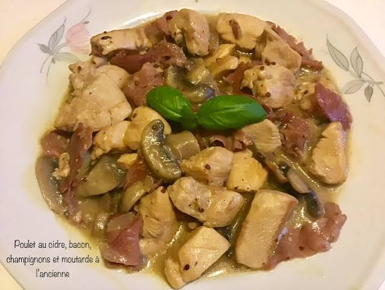

Poulet au cidre, bacon et champignons
Ingrédients
4×
- 500 g de champignons de Paris
- 10 tranches de bacon
- 35 cl de cidre brut
- 1 grosse pincée de fond de veau
- beurre
- 4 blancs de poulet
- 30 cl de crème fraîche épaisse
- sel
- poivre

Préparation
Étape 1
Éplucher et émincer 500 g de champignons de Paris. Couper 10 tranches de bacon en carrés de 1cm.
Étape 2
Rissoler sans matière grasse les champignons et le bacon avec un demi-verre des 35 cl de cidre brut. Ajouter 1 grosse pincée de fond de veau et un peu d’eau, puis laisser caraméliser 10min à feu doux. Réserver.
Étape 3
Dans la même poêle, fondre une noisette de beurre et cuire 4 blancs de poulet. Ajouter petit à petit le reste du cidre et réduire. Griller en fin de cuisson pour corser la sauce.
Étape 4
Remettre le mélange bacon-champignons et laisser mijoter 5min.
Étape 5
Incorporer 30 cl de crème fraîche épaisse jusqu’à obtenir une sauce épaisse et onctueuse. Ajouter du sel et du poivre.
Résumé
500 g de champignons de Paris
10 tranches de bacon
émincer Couper
35 cl de cidre brut
1 grosse pincée de fond de veau
Rissoler laisser caraméliser feu doux
beurre
4 blancs de poulet
cuire réduire
laisser mijoter 5min
30 cl de crème fraîche épaisse
sel
poivre
Incorporer